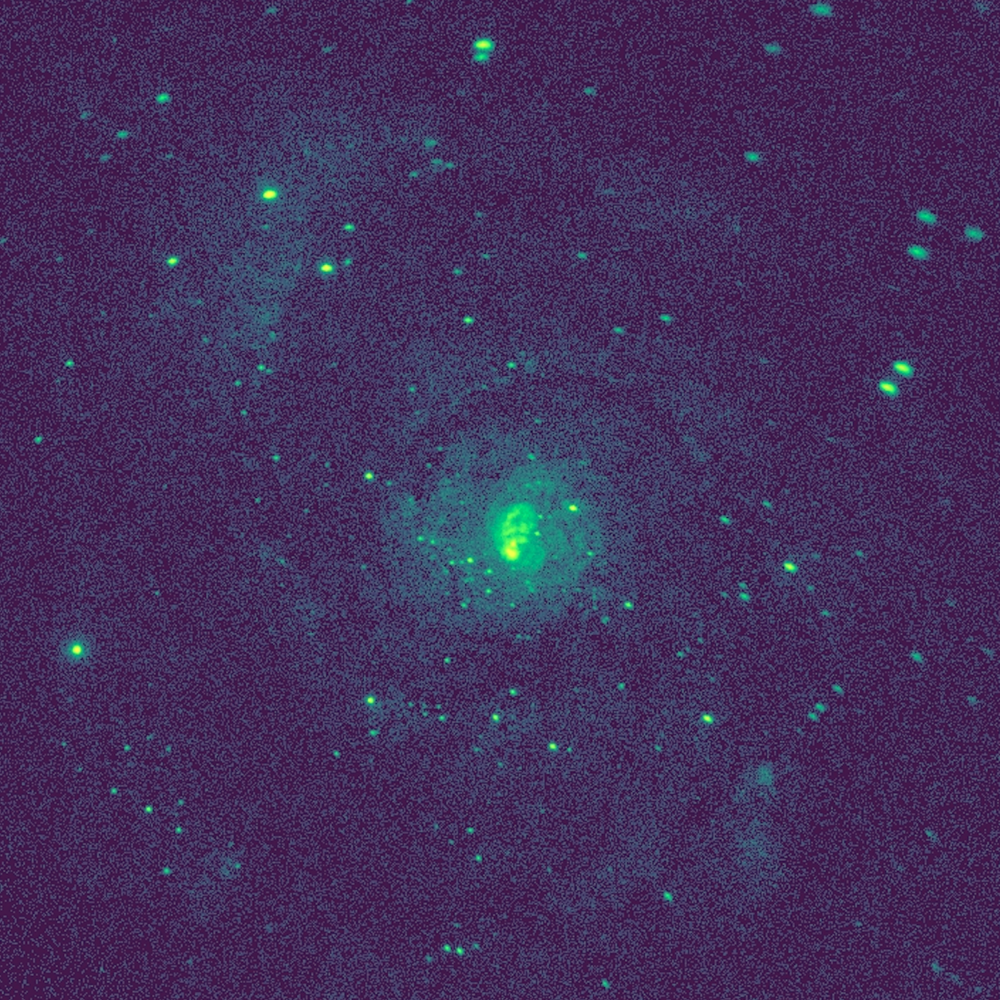
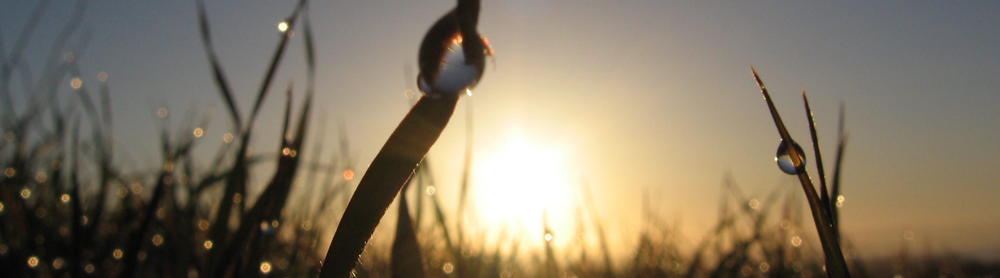
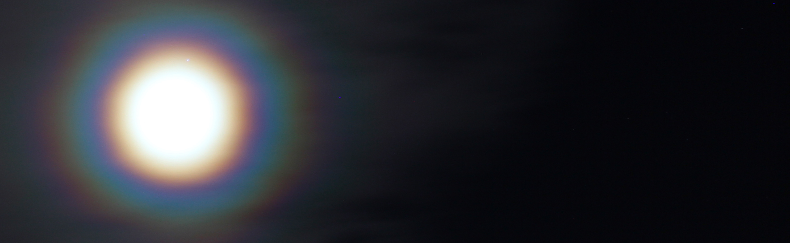
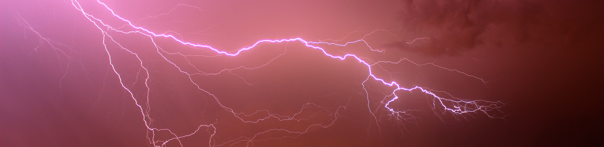
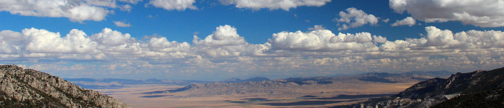
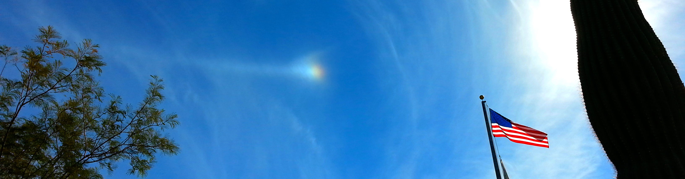
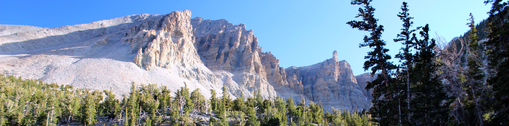
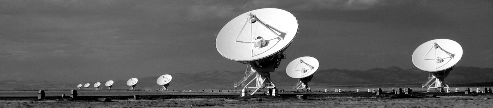

About Me

M51, Chandra X-ray Observatory; image processing by J. Rice
I am a postdoctoral research associate at Texas State University working with Prof. Blagoy Rangelov on a variety of topics in observational high-energy astrophysics. Currently we are studying X-ray binaries in M51 with Chandra X-ray Observatory and the Hubble Space Telescope. We are also studying optical counterparts of X-ray sources in various starforming galaxies with Chandra and HST.
I also collaborate with Prof. Bing Zhang (my PhD advisor) at the University of Nevada, Las Vegas on theoretical high-energy astrophysics. We study primordial black holes, black hole accretion, and electromagnetic counterparts of binary supermassive black hole mergers.
I also collaborate with Dr. Robert Zavala (United States Naval Observatory Flagstaff Station) and Prof. Greg Taylor (University of New Mexico) on Very Long Baseline Array (VLBA) imaging of AGN cores and jets. We have used the VLBA to image two AGN cores for ten hours each to quantify the core-shift effect in these bright radio sources.
I am also working with various collaborators on understanding the formation and evolution of short and long gamma-ray bursts and their afterglows through their electromagnetic and gravitational-wave emission mechanisms.
Curriculum Vitae

Sunrise, Santa Cruz, CA, 2006; J. Rice
Curriculum Vitae [ pdf ]
Publications

Lunar corona, Las Vegas, NV, 2016; J. Rice
Highlights
- ADS entries: 11
- First author entries: 3
- Refereed papers: 9
- Refereed first author papers: 2
Citations

Cloud to cloud lightning, Las Vegas, NV, 2013; J. Rice
Highlights
- Total citations: 62
- First author citations: 20
- h-index: 5
- First author h-index: 2
- m-index: 0.7 (h-index has increased by 0.7 yr −1 on average)
- i10-index: 2 (number of papers with at least 10 citations)
- i100-index: 0 (number of papers with at least 100 citations)
Research

Great Basin National Park, NV, 2016; J. Rice
I am a high-energy astrophysicist and am interested in the electromagnetic and gravitational-wave radiation signatures of compact object systems in the universe. I am a theorist by training, but am now also working in X-ray, optical, and radio astronomy. In my first postdoctoral position, I have used the Chandra X-ray Observatory and Hubble Space Telescope to study all the X-ray point sources in the Whirlpool Galaxy/M51 (J. Rice, B. Rangelov, et al. I 2021, and J. Rice, B. Rangelov et al. II 2021, in prep).
I am broadly interested in accreting black hole systems (Rice and Zhang 2020) and primordial black holes (Rice and Zhang 2017) as cosmological probes.
The most exciting astronomy news of the last decade was the confirmation of the existence of black holes through the LIGO discovery of gravitational waves from the merging black hole binary GW150914. I am interested in the electromagnetic counterparts of supermassive black hole mergers, which may be visible by a number of future observatories.
Teaching

Parhelion and partial parhelic circle, 2016; J. Rice
I had great fun teaching a variety of astronomy and physics laboratory and lecture courses from 2009-2018 as a graduate teaching assistant and adjunct instructor. Currently I do not have any teaching duties as a postdoctoral research associate.
My teaching experience is segmented into three time periods: as a graduate teaching assistant at Montana State University in Bozeman, MT, as an adjunct instructor of physics at Miami University in Oxford, OH, and as a graduate teaching assistant at the University of Nevada, Las Vegas in Las Vegas, NV. I have taught the following:
University of Nevada, Las Vegas: 2013-2018
- Introductory astronomy laboratory: 14 sections
- Introductory physics laboratory: 6 sections
Miami University: 2012-2013
- Calculus-based physics I (classical and quantum mechanics) lecture: 2 sections
- Calculus-based physics II (E&M, thermodynamics, relativity) lecture: 3 sections
Montana State University: 2009-2012
- Introductory physics laboratory: 8 sections
- Intermediate physics laboratory: 3 sections
- Intermediate astronomy laboratory: 6 sections
News

Bristlecone pine grove, Great Basin NP, NV, 2016; J. Rice
2021
- Attending the Yukawa Institute of Theoretical Physics International Molecule-type Workshop: Fast Radio Bursts: A Mystery Being Solved?; February 8-19, 2021.
- In prep (submitting soon): Rice, J.R., Rangelov, B., Prestwich, A., Chandar, R., Bichon, L., and Boldt, C., X-ray binaries in M51 I: catalog and statistics
- In prep (submitting soon): Rice, J.R., Rangelov, B., Prestwich, A., Chandar, R., Bichon, L., and Boldt, C., X-ray binaries in M51 II: individual sources
- In prep (submitting soon): Rice, J.R., Rangelov, B., Chandar, R., and Prestwich, A., Optical counterparts to X-ray sources in nearby starburst galaxies
- In prep (submitting soon): Rice, J.R. and Zhang, B., Transient electromagnetic signatures from merging supermassive black hole binaries
- In prep (submitting soon): Rice, J.R., Zavala, R.T., and Taylor, G.B., Core shifts in compact symmetric objects
2020
2019
2018
- October 24: PhD dissertation "Primordial black holes in the cosmological context and transient electromagnetic signatures from merging black hole binaries" published by ProQuest.
- September 1: Started first postdoctoral research associate position at Texas State University under the supervision of Prof. Blagoy Rangelov.
- August 2: Paper "Characteristics of two-episode emission patterns in Fermi long gamma-ray bursts" with collaborators Lin Lan, Hou-Jun Lü, Shu-Qing Zhong, Hai-Ming Zhang, Ji-Gui Cheng, Shen-Shi Du, Long Li, Jie Lin, Rui-Jing Lu, and En-Wei Liang published in Monthly Notices of the Royal Astronomical Society.
- April 6: Successfully defended PhD dissertation at the University of Nevada, Las Vegas Department of Physics & Astronomy
2017
2016
2015
Contact

Very Large Array panorama, 2009; J. Rice
: jrice [ at ] txstate [ dot ] edu
GitHub : jaredrrice
Office address
Texas State University
Department of Physics
Roy F. Mitte Bldg (RFM) 3240
749 N. Comanche St.
San Marcos, TX 78666